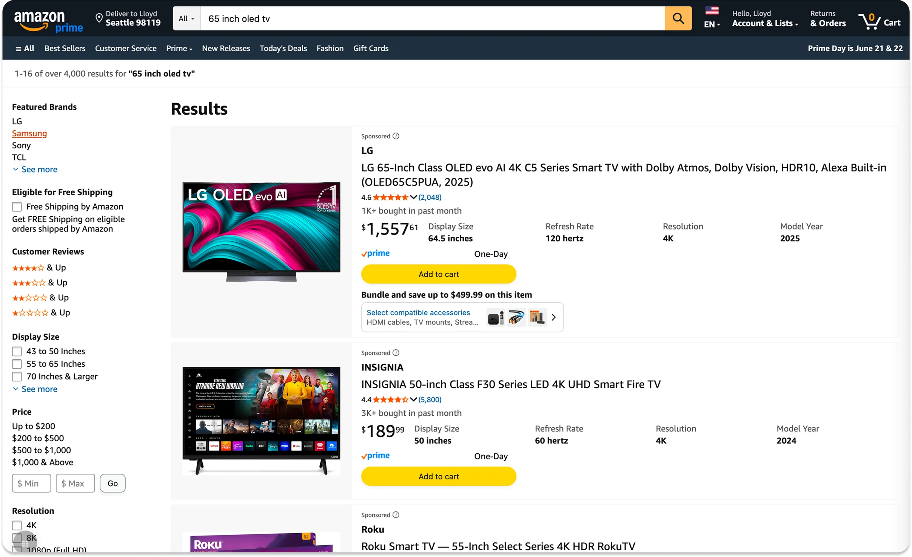

AI Builder
Improving Basket Building
Background
I was disappointed when I got my Xbox. I realized I needed the HDMI cord to make it HD and I wasn't aware of that when I bought it.
Buying one product is rarely enough to use it. A TV needs a mount, a cable, maybe a soundbar. Amazon's Basket Building org closes that gap two ways, each one a program with its own team: bundles, which a seller packages and prices together, and complementary recommendations, which the customer judges individually. I design across both, for consumer electronics.
Every one of those offers lives on a product page or is initiated from one. Customers do still buy that way, but our clickstream analysis showed a growing number adding to cart straight from the search results page and checking out from there, never opening a product page at all. That path has no basket building on it, and we wanted to reach that traffic too.
None of the basket building teams had the bandwidth to take it on. So when Amazon launched an experimental role called the AI Builder, asking whether a pod of three could use AI to carry a feature from analysis all the way to production, I volunteered.
Project goals
Units per purchase is an org-wide metric, and the goal set across Basket Building was to move it from 4.07 to 4.33. No one project moves a number that size on its own. Extending basket building to the search results page was the unclaimed piece of it, because the customers checking out from there are never offered the items that complete their setup, and this project was my attempt to take that piece as far as it would go.
The project was initiated in April 2026. I sized the opportunity, designed the experiences, and wrote the front-end code that ships them.
Team and role
The AI Builder pod was a Product Manager, a Software Engineer, and me. I owned the UX and the front-end build:
- Interaction design flows
- High-fidelity mock ups
- The interactive prototype
- Organizing leadership reviews
- Accessibility annotations
- Writing the production front-end code with AI agents, submitted through Amazon's engineering review process
I picked up the product analysis too. A pod of three doesn't split work by title, and the case for building on search results needed evidence before anyone would fund a design, so I went and built it: AI agents tracing 1.6 million purchase journeys through Amazon's clickstream data. In practice I was wearing the analyst hat, the designer hat, and the front-end engineer hat, with the PM and the engineer as partners on hypothesis and backend.
Design and outcomes
Our clickstream analysis showed that 4 in 10 consumer electronics purchases happen without the customer ever seeing a bundle, and about half of those happen entirely on the search results page, with no product page visit at all. That validated the decision to bring basket building there first.
Synthesizing 11 prior Basket Building studies told me who I would be designing for. 64% of customers do look for the complementary items themselves, either at the same time as the main product or right after buying it. What came through in every study was how they described doing it: a hunting mission. Product names don't say what the thing actually is, compatibility with what they already own is hard to confirm, and nothing explains why one accessory is the better choice for the thing they are trying to do. The demand was never the problem. The work of satisfying it was being left to the customer.
There was no brief to work from, so the first deliverable was a UX strategy rather than a screen. It proposed two experiments that differ on two axes, who assembles the set and when the offer arrives: the seller's set, offered right after the customer adds to cart and accepted in a tap, or the customer's own set, assembled before anything goes in the cart. Each carried its own treatments, so the org could learn not just whether basket building works on search results but which version of it customers are receptive to.
- Bundle Swap. Post add to cart. The seller's set, offered the instant a customer adds to cart, one tap to switch to it. Three CX treatments. This is the one that launched.
- Build Your Own Bundle. Before add to cart. The customer assembles their own set of complements first. Two concepts, slated for a later experiment.
- An interactive prototype for leadership alignment.
The three gaps in that hunt, naming, compatibility and accessory value, became the brief for all five designs. Seller bundle names were all over the place ("TV + S95TR SB Bundle"), so alongside them I proposed a naming framework that leads with what is new to the customer: "with [Brand] [Product] [Key Feature]". The customer has just added the first item to cart, so the card should only spend their attention on what they don't already know.
I then used AI agents to write the front-end code and submitted my first production code review within the first week. When we learned a designer's verification isn't enough for production code, we set up a two-step review where I verify the customer experience and my engineering partner verifies the code. That process became part of the playbook my org adopted as the pilot's primary deliverable. Bundle Swap launched with its three treatments, which makes it the first basket building offer Amazon has ever put on the search results page. It read out at an 11% swap rate, and units per purchase rose 0.11 on the purchases that saw the offer.
11% Bundle Swap rate, customers who switched to the seller's bundle
+0.11 Units per purchase on treated purchases
Experience
Experiment strategy 2 is the one being built now. It moves the offer earlier, putting the basket building opportunity on the search results page before the customer has added anything to their cart, so assembling the set is where the purchase starts rather than something bolted on after it. The screens below are the desktop version of that idea.


The first experiment is live and the results are not in yet. In-depth details and those results can be covered in person or during the interview process.